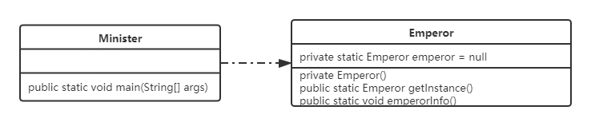

【设计模式】Singleton-单例
单例模式（Singleton Pattern）
ref：《设计模式之禅》
这个模式是很有意思，而且比较简单，但是我还是要说因为它使用的是如此的广泛，如此的有人缘，
单例就是单一、独苗的意思，那什么是独一份呢？你的思维是独一份，除此之外还有什么不能山寨的呢？
我们举个比较难复制的对象：皇帝
中国的历史上很少出现两个皇帝并存的时期，是有，但不多，那我们就认为皇帝是个单例模式，在这
个场景中，有皇帝，有大臣，大臣是天天要上朝参见皇帝的，今天参拜的皇帝应该和昨天、前天的一样（过
渡期的不考虑，别找茬哦），大臣磕完头，抬头一看，嗨，还是昨天那个皇帝，单例模式，绝对的单例模式，先看类图：

private的构造函数是保证这个类不能被其他类new出来getInstance()是获得唯一一个实例化对象
定义
保证一个类仅有一个实例，并提供一个访问它的全局访问点。
- 单例类只能有一个实例
- 单例类必须自己创建自己的唯一实例
- 单例类必须给所有其他对象提供这一实例
优点
- 在内存中仅有一个实例，减少了内存的开销
- 避免对资源的多重占用
缺点
- 没有接口，不能继承，与单一职责原则冲突（一个类应该只关心内部逻辑，而不关心外面怎么来实例化的）
🌰举个栗子🌰
No 1. 饿汉模式
1 | /** |
No 2. 懒汉模式（DCL）
1 | /** |
No 3. 懒汉模式（静态内部类）
1 | /** |
No 4. 枚举单例
1 | /** |
Comments